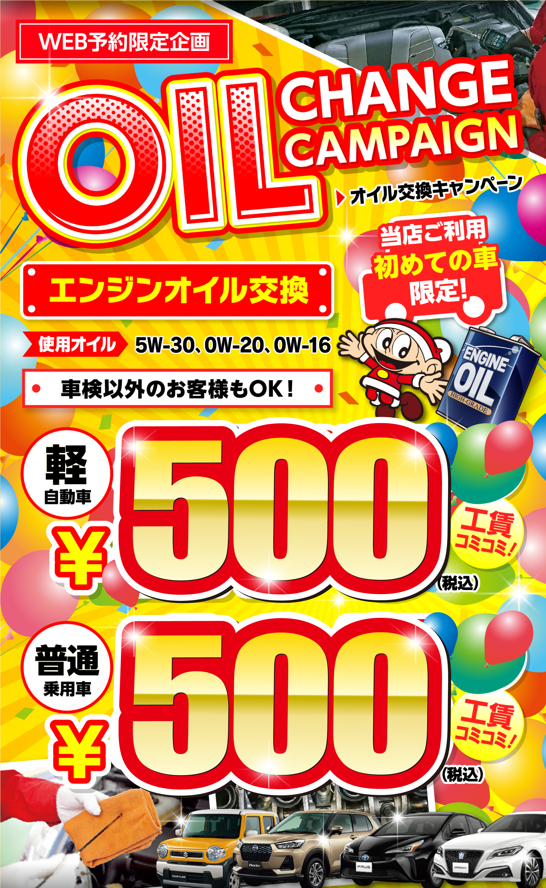
車検のコバック 大船渡店
作業受付時間
11：00〜17：30
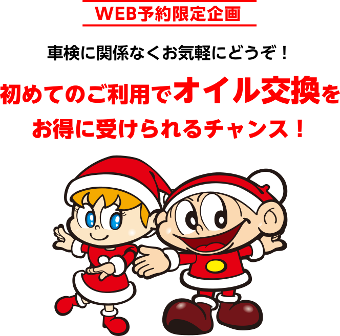
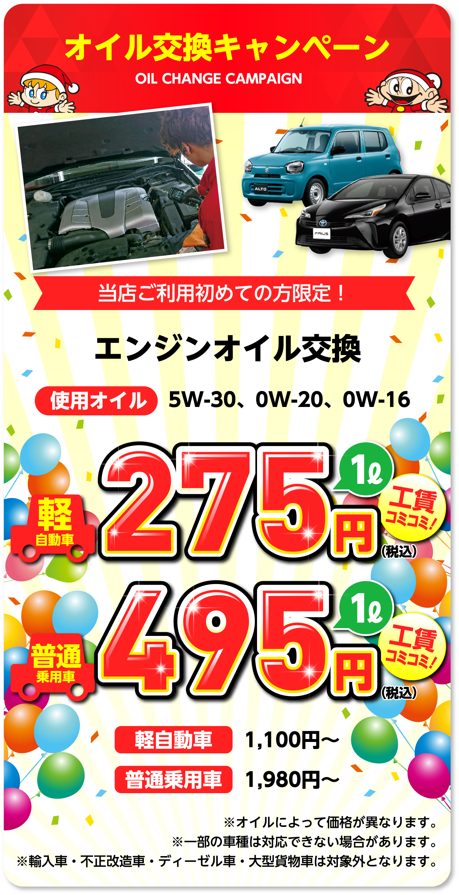
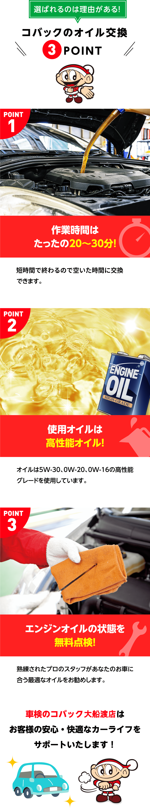

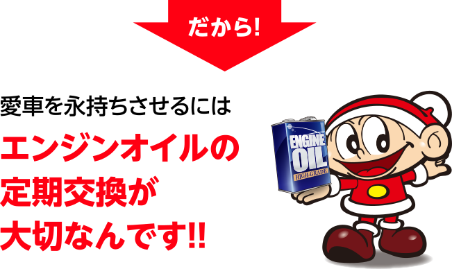
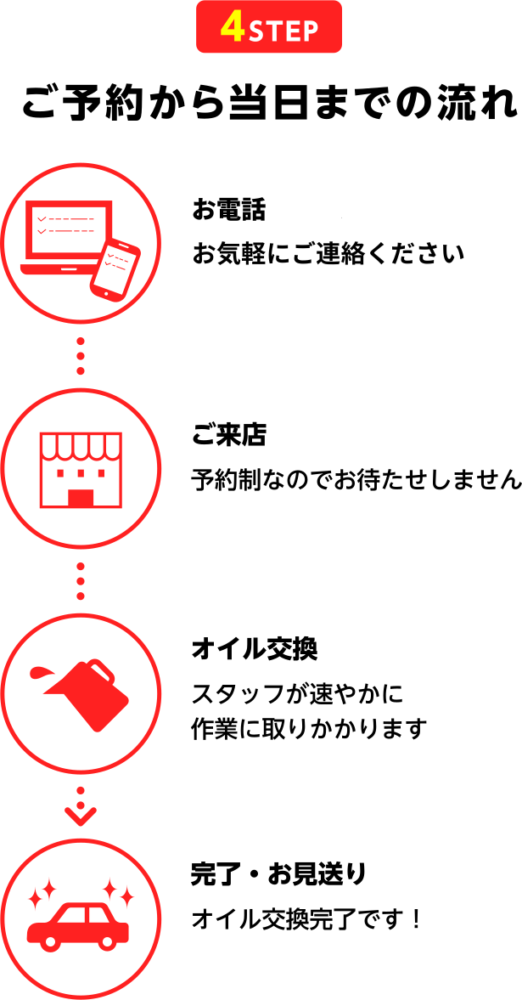
-
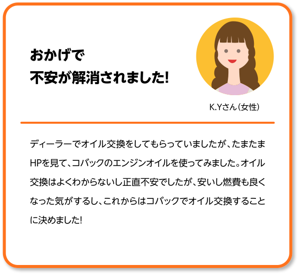
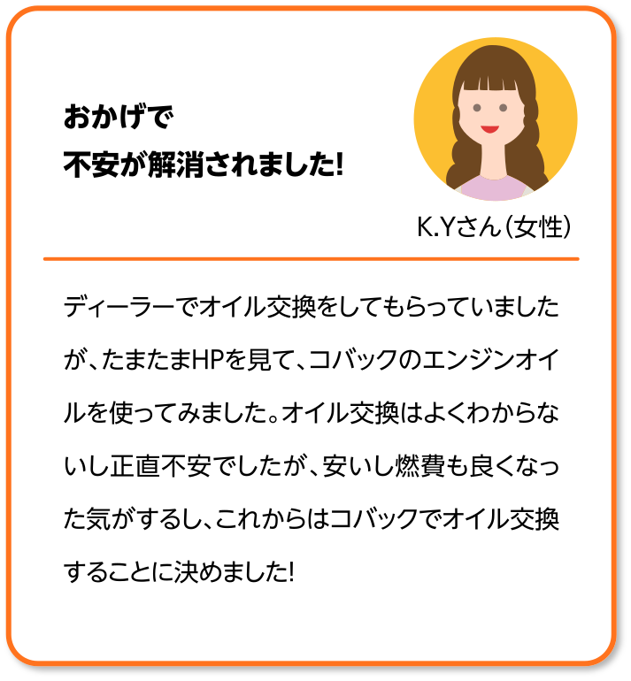
-
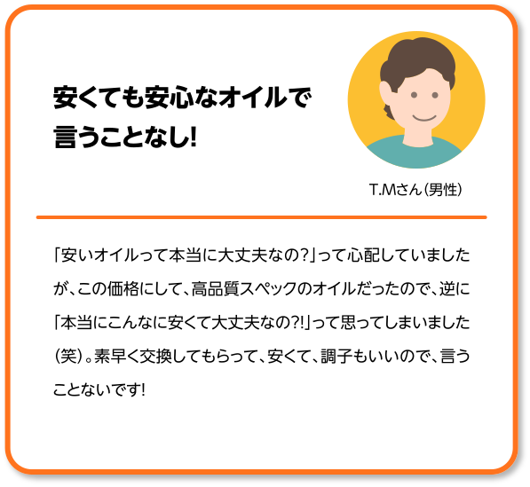
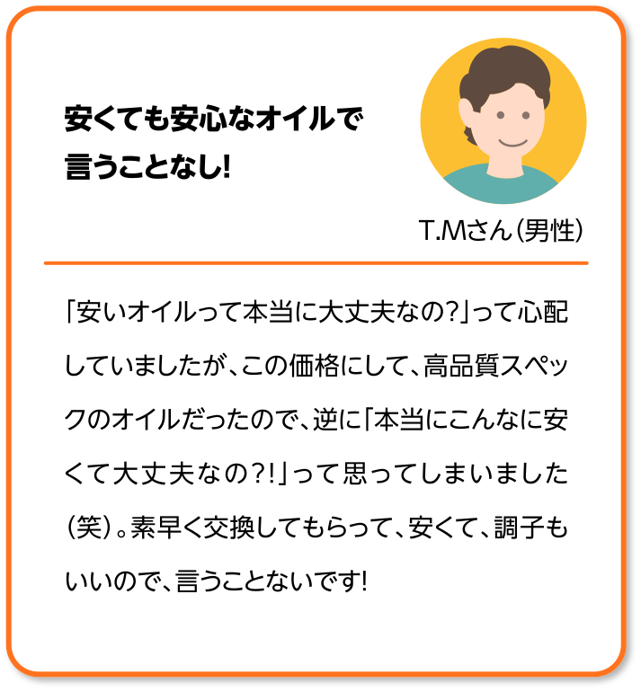
-
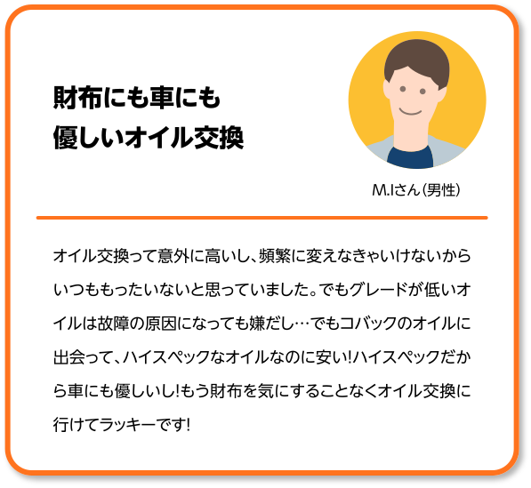
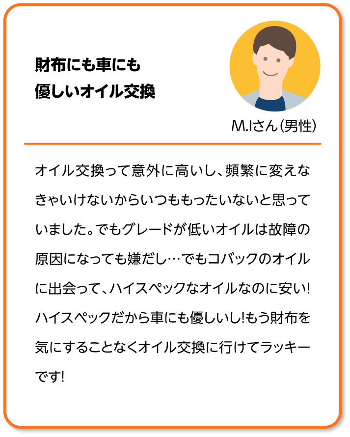
-
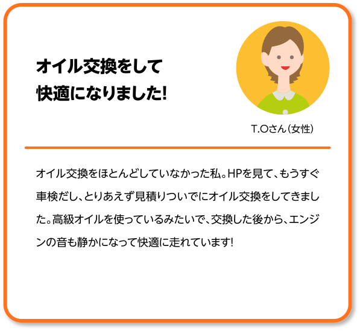
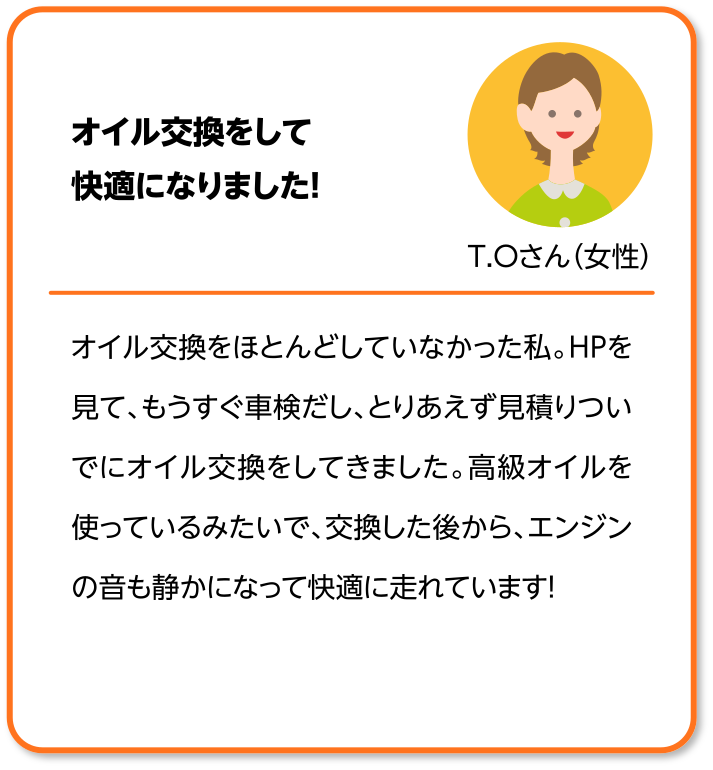
皆様から頂くよくあるご質問をまとめました。
その他ご質問やご不明点がございましたら
何なりとお申し付けください。
-
なぜエンジンオイルは必要なの？
金属表面の保護、金属同士の摩擦を軽減するためです。
-
エンジンオイルにはどのような働きがあるの？
潤滑作用・冷却作用・密封作用・防錆作用・清浄作用があります。
-
エンジンオイルはいつ交換したら良いの？
自動車メーカーは必要最低限の性能を保つことができる距離を、エンジンオイルの交換距離として推進しています。一般的には6ヶ月又は5,000km毎が望ましいですがシビアコンディション(過酷な走条件)では、通常より短いサイクルのオイル交換条件を推奨しています。
-
エンジンオイルって減るの？
エンジンオイルは、走行するにつれて燃料と一緒に燃やされて排出されるため、徐々に量が減ってしまいます。一回の走行で消費されるエンジンオイルの量はごく少量ですが、車や走行状況によって変わります。量が減りすぎるとエンジンやその他周辺器機のトラブルが発生する危険性もありますので注意が必要です。厳しい運転条件(悪路、山道、登降坂路、急加減速の繰り返し、エンジンオイルの高回転使用頻度が高いなど)での走行は、通常と比べてエンジンオイルの消費が早くなることがあります。
-
粘度グレードってなに？
オイルの硬さや軟らかさを、一般的なSAE粘度分類で表します。SAE粘度分類は低温環境と高温環境の2つのグループに分け、低温環境には「W」を付けて区別しています。さらにそれぞれのグループ内で細かに分類しています。
実施店舗詳細
■ 車検のコバック 大船渡店
- 住所 / 岩手県大船渡市猪川町久名畑4-30
- 営業時間 / 9:00〜18:00
- 電話番号 / 0120-589-196
- 定休日 / 火曜、水曜、GW、夏季休暇、年末年始